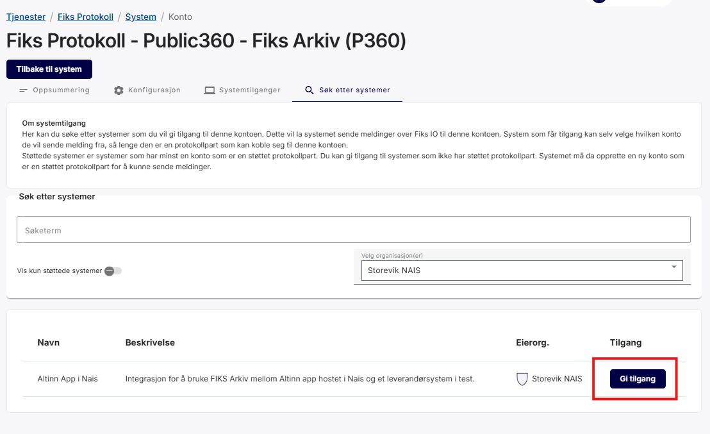

Hvordan sette opp Fiks Arkiv-integrasjon for en app.
Nuget versjon v8.9.0 eller høyere
kreves for å støtte Fiks Arkiv.
I tillegg til dokumentasjonen tilgjengelig her, har vi en
demo applikasjon som viser et fullstendig oppsett
for Fiks Arkiv integrasjon i en app.
Forutsetninger
Før du setter opp Fiks Arkiv-integrasjonen i appen din, må du ha følgende på plass:
Fiks Protokoll aktivert i Fiks forvaltningsportalen for din organisasjon
Tilgang til Samarbeidsportalen for å konfigurere Maskinporten-klienter
Et arkivsystem som integrerer med Fiks Arkiv (f.eks. Public 360)
Integrasjonsarkitektur og flyt
Prinsippet for meldingsutveksling gjennom Fiks Arkiv. Fagsystemet i skissen vil i dette tilfellet være en Altinn app.
Kilde: KS Digital
Flytdiagram for Fiks Arkiv integrasjon for en Altinn app
Konfigurasjon for sending av meldinger fra Altinn App
Steg 1: Opprett en Maskinporten-klient
Sett opp en Maskinporten-klient med følgende scopes: ks:fiks, altinn:serviceowner/instances.read og
altinn:serviceowner/instances.write
Generer et JWK-nøkkelpar for Maskinporten authentication og last opp den offentlige nøkkelen til den nyopprettede Maskinporten-klienten
Ta vare på følgende konfigurasjonsverdier for Altinn App-oppsettet
Klient-id for den genererte Maskinporten-klienten
Offentlig og privat nøkkel for Maskinporten JWK-nøkkelparet (base64-enkodet)
Denne Maskinporten-klienten vil bli brukt til å autentisere forespørsler fra Altinn-appen både mot Altinn Platform
og Fiks.
En detaljert veiledning for hvordan du setter opp en Maskinporten-klient i Samarbeidsportalen er tilgjengelig nedenfor.
Start med å logge inn på kontoen din med valgt metode.
Når du er logget inn på kontoen din, vises organisasjonen du representerer i toppmenyen til høyre.
Organisasjonen du representerer vises i toppmenyen.
Hvis du logget inn for å representere en syntetisk organisasjon, vil du også kunne endre den organisasjonen du representerer i nedtrekksmenyen på det elementet.
Du kan endre den syntetiske organisasjonen du representerer i nedtrekksmenyen.
Velg Opprett klient-knappen for å begynne å opprette en ny klient for organisasjonen du representerer.
Velg Maskinporten på Legg til klient-siden.
På Legg til Maskinporten klient-siden fyll inn visningsnavn, beskrivelse og legg til dine nødvendige scopes (disse verdiene kan også endres senere). Klikk deretter Opprett-knappen.
Siden for å legge til Maskinporten-klient.
Du har nå opprettet en Maskinporten-klient for din organisasjon.
For å bruke denne klienten må du legge til minst én autentiseringsnøkkel. Klienten støtter JWK- og PEM-nøkler.
Start med å enten finne en eksisterende nøkkel eller opprette en ny. Du kan bruke Altinn JWKS-verktøyet eller annen nøkkelgenerator du ønsker til dette formålet.
Naviger deretter til nøkkelseksjonen på klientsiden din og velg Legg til.
Nøkler kan legges til i nøkkelseksjonen.
I feltet JWK eller PEM format lim inn din offentlige nøkkel og klikk Lagre. Nøkkelen er nå lagt til klienten.
Lagre din private nøkkel fra din JWK eller PEM på et sikkert sted, da den brukes til å autorisere bruken av denne klienten.
Hvis du bruker Azure Key Vault for å lagre dine private nøkler, må de være base64-kodet før opplasting.
Den offentlige JWK- eller PEM-nøkkelen limes inn i dette feltet
Hvis du ikke gjorde det i trinn 5, må du legge til ønskede scopes til klienten din før den kan brukes.
Fra Scopes-fanen på klientdefinisjonen din, klikk Legg til-knappen.Scopes som er tilgjengelige for organisasjonen din vil vises i listen. Velg de nødvendige og klikk Send inn.
Steg 2: Opprett en Fiks Arkiv-konto
For å sikre at kvittering for arkivmelding blir sendt til rett applikasjon, kan ikke flere apper dele på én konto.
Det er derfor anbefalt at man setter opp én konto per unike Altinn app.
Generer et x509-sertifikat for Fiks Arkiv-kryptering.
Formatkrav:
Offentlig del: .PEM-fil, som skal lastes opp i Fiks Forvaltning
Privat del: .PEM-formatert streng, base64-kodet som skal lastes opp som en hemmelighet for Altinn-appen.
Bruk ditt foretrukne verktøy for å generere sertifikatet. En veiledning er tilgjengelig på slutten av denne seksjonen.
Dette genererer en fil privatebase64.txt som inneholder privatnøkkelen som en Base64-kodet streng.
Linux / macOS
Bruk base64-kommandoen:
base64 private.pem > privatebase64.txt
Dette oppretter privatebase64.txt med den Base64-kodede privatnøkkelen.
Merknader
Hold privatnøkkelen din sikker. Ikke del private.pem eller dens Base64-representasjon offentlig.
Det genererte sertifikatet (public.pem) kan distribueres etter behov.
Feilsøking
OpenSSL ikke funnet: Sørg for at det er installert og lagt til i system-PATH.
Tillatelsesproblem: Kjør kommandoene med passende rettigheter eller i en katalog der du har skrivetilgang.
Ugyldig Base64-utdata: Bekreft at den opprinnelige filen eksisterer og er lesbar før koding.
Steg 3: Konfigurer og forbered Altinn-appen
Altinn Fiks-pakken håndterer automatisk mye av integrasjonen for deg. Det enkleste oppsettet for en Fiks-integrasjon
involverer å sette opp konfigurasjonsverdier for tilkobling til Maskinporten og Fiks, samt å spesifisere hvilke
data som skal sendes til Fiks og hvem mottakeren er.
Når det er sagt kan alle grensesnitt kan overstyres med tilpasset logikk dersom du ønsker mer kontroll selv.
Standardmåten er det som beskrives her, men grensesnitt vil bli nevnt for de som ønsker mer kontroll.
Legg til en referanse til NuGet-pakken
Altinn.App.Clients.Fiks i prosjektfilen din.
Pakkeversjonen bør samsvare med versjonen av Altinn.App.Core og Altinn.App.Api pakkene.
Merk: Du kan fritt velge seksjonsnavn for konfigurasjonsverdiene,
men disse må samsvare med seksjonsnavnene som brukes i appsettings.json og/eller applikasjonens hemmelighetsadministrasjons-
plattform (f.eks. Azure Key Vault).
Sett opp konfigurasjonsverdier i appsettings.json eller Azure Key Vault.
Alle sensitive verdier bør registreres i Azure Key Vault, og ikke sjekkes
inn i appsettings.json.
Klient-id for Maskinporten-klienten generert i steg 1 og den base64-kodede offentlige og private nøkkelen
bør legges til som ClientId og JwkBase64 i MaskinportenSettings-seksjonen.
Innstillingsnavn
Beskrivelse
Authority
Maskinporten authority/audience som skal brukes for autentisering og autorisasjon.
ClientId
Klient-ID som er registrert hos Maskinporten. Typisk en uuid4-streng.
JwkBase64
Privatnøkkelen som brukes til å autentisere med Maskinporten, i Base64-kodet JWK-format.
"MaskinportenSettings": {
"Authority": "https://[test.]maskinporten.no/",
"ClientId": "retrieved from secrets",
"JwkBase64": "retrieved from secrets"}
Key Vault Secrets
MaskinportenSettings--ClientId
MaskinportenSettings--JwkBase64
For at applikasjonen skal kunne lese hemmelighetene fra Azure Key Vault, må den konfigureres til å gjøre det.
Se hemmeligheter-seksjonen for å oppnå dette.
Merk: Hemmelighetene leses av applikasjonen ved oppstart, så hvis du gjør endringer etter at applikasjonen er publisert,
må du publisere applikasjonen på nytt for at de skal tre i kraft.
Base64-kodet privatnøkkel i PEM-format, brukt til autentisering og meldingsdekryptering.
Konfigurasjonseksempel
Det anbefales å lagre alle sensitive FiksIO-innstillingsverdier sikkert i Azure Key Vault
eller hemmelighetsadministrasjonsleverandøren som brukes av applikasjonen din.
Videre bryter vi ned hver underseksjon av FiksArkivSettings, viser hvordan verdier bindes (statisk vs. dynamisk),
og gir et komplett appsettings.json-eksempel.
Ettersom koden kan endres, er innstillingene dokumentert etter beste evne.
Hvis du ønsker en nøyaktig fremstilling av de tilgjengelige innstillingene, vennligst se kildekoden.
Seksjoner og innstillinger
Receipt (FiksArkivSettings.Receipt)
Innstillinger relatert til postene som opprettes etter en vellykket forsendelse.
Merk: Datatypene som defineres her må ha tilsvarende oppføringer i datatype-definisjonen i applicationmetadata.
Innstillingsnavn
Formål
Format
ConfirmationRecord
Definerer datatypen og navnet for arkivkvitteringen.
Innstillinger relatert til hvem som skal motta Fiks Arkiv-meldingen.
Innstillingsnavn
Formål
Type
FiksAccount
Mottaker-konto GUID som meldinger skal sendes til.
GUID (påkrevd)
Identifier
Mottaker-identifikator (f.eks. kommunenummer).
string (påkrevd)
Name
Mottakernavn.
string (påkrevd)
OrganizationNumber
Valgfritt organisasjonsnummer for mottaker.
string (valgfritt)
Mottaker-innstillinger støtter både statiske og dynamiske konfigurasjonsformater - se
Hvordan verdier oppgis for syntaks og bruk DataModelBinding når felt varierer
per instans.
Valgfri regel-ID for behandling av innkommende melding i systemer som støtter regel-IDer.
Utelatt hvis ikke oppgitt.
CaseFileId
ID for den genererte saksmappen (saksmappe element).
Standard til instansidentifikatoren hvis ikke oppgitt.
CaseFileTitle
Tittel for det genererte saksmappe tittel elementet.
Standard til applikasjonstittel hvis ikke oppgitt.
JournalEntryTitle
Tittel for det genererte journalpost tittel elementet.
Standard til applikasjonstittel hvis ikke oppgitt.
Metadata støtter både statiske og dynamiske konfigurasjonsformater - se
Hvordan verdier oppgis for syntaks og bruk DataModelBinding når felt varierer
per instans.
Definisjon av dokumentene som skal inkluderes i arkivmeldingen (arkivmelding) som sendes til Fiks Arkiv.
Innstillingsnavn
Formål
PrimaryDocument
Hoveddokumentet (f.eks. skjemadata eller PDF) sendt som Hoveddokument.
Attachments
Valgfrie tilleggsdokumenter sendt som Vedlegg (array av vedlegg).
Hver dokumentoppføring bruker typisk DataType for å indikere kilde og/eller format. For eksempel "ref-data-as-pdf" for en PDF generert fra referansedata.
Bruk Value når du kjenner teksten på forhånd; bruk DataModelBinding når verdier skal komme fra runtime-dataene dine (f.eks. felt samlet inn i et skjema eller hjelpemodell).
Feilsøking
Manglende titler: Hvis journalpost- eller saksmappetitler er tomme, sjekk at din DataModelBinding peker til eksisterende felt, eller oppgi en Value.
Feil mottaker: Bekreft at FiksAccount inneholder en gyldig GUID og samsvarer med den tiltenkte mottakeren.
Vedleggsoppløsning: Sørg for at hver vedleggs DataType er definert i applicationmetadata.
Definer ønsket prosessflyt for applikasjonen
Den anbefalte prosessflyten for en applikasjon som bruker Fiks Arkiv er avbildet nedenfor.
Tilbakemeldingstrinnet er nødvendig for å muliggjøre respons fra den asynkrone prosessen med å sende arkivmeldingen
og motta svar før det bekreftes til brukeren at sendingen var vellykket.
Definer policy for applikasjonen
Sørg for at hver oppgave i prosessflyten har autorisasjonsregler knyttet til seg som spesifiserer hvilke enheter som har lov til
å fullføre hvilke handlinger gitt en bestemt tilstand.
Overstyre standardatferd
Hvis standard arkivmelding og funksjonalitet ikke dekker det du trenger i arkivmeldingen din,
er det mulig å overstyre implementeringen av funksjonalitet for generering av arkivmelding og
behandling av responsen fra den mottakende Fiks-kontoen.
Overstyr generering av arkivmelding
Grensesnittet som skal implementeres er IFiksArkivPayloadGenerator.
Hvis din implementerte klasse heter OverridePayloadGenerator, vil tjenesteregistreringen være som følger:
Konfigurasjon for mottak av meldinger i arkivsystem
Ettersom Digdir ikke tilbyr arkivsystemet eller Fiks Arkiv, har vi ikke omfattende dokumentasjon her, men anbefaler at
applikasjonsutvikleren refererer til KS Digitals dokumentasjon sammen med dokumentasjonen fra
arkivsystemleverandøren.
Imidlertid, ettersom flere applikasjonseiere tar i bruk integrasjonen har vi sett noen vanlige fallgruver.
Disse sammen med løsninger er listet opp nedenfor, til din disposisjon.
Opprett en Fiks Arkiv-konto
For din organisasjon, sett opp et nytt system under Fiks Protokoll
Opprett en konto knyttet til dette systemet
Kontoen skal konfigureres med følgende egenskaper
Egenskap
Verdi
Protokolltype
no.ks.fiks.arkiv
Versjon
v1
Protokollparter
arkiv.full
Velg gjerne et navn på kontoen som gjenspeiler appen, da det er anbefalt at det settes opp én konto per Altinn app man skal integrere mot.
Vennligst se arkivsystemdokumentasjonen for krav til krypteringsnøkkelparet.
Under kontoen, naviger til fanen Søk etter systemer og slå opp systemet som ble opprettet for å sende meldinger.
Gi dette systemet tillatelse til å sende meldinger til mottakerkontoen ved å klikke Gi tilgang.

Kjente problemer i konfigurasjon av Public 360
Krypteringsnøkkelen er ikke dokumentert
Maskinporten-tokenet som lastes opp i P360 brukes som den private delen av krypteringsnøkkelen
Fiks Arkiv-kontoen som mottar meldinger skal laste opp den offentlige delen av dette sertifikatet
som krypteringsnøkkelen.